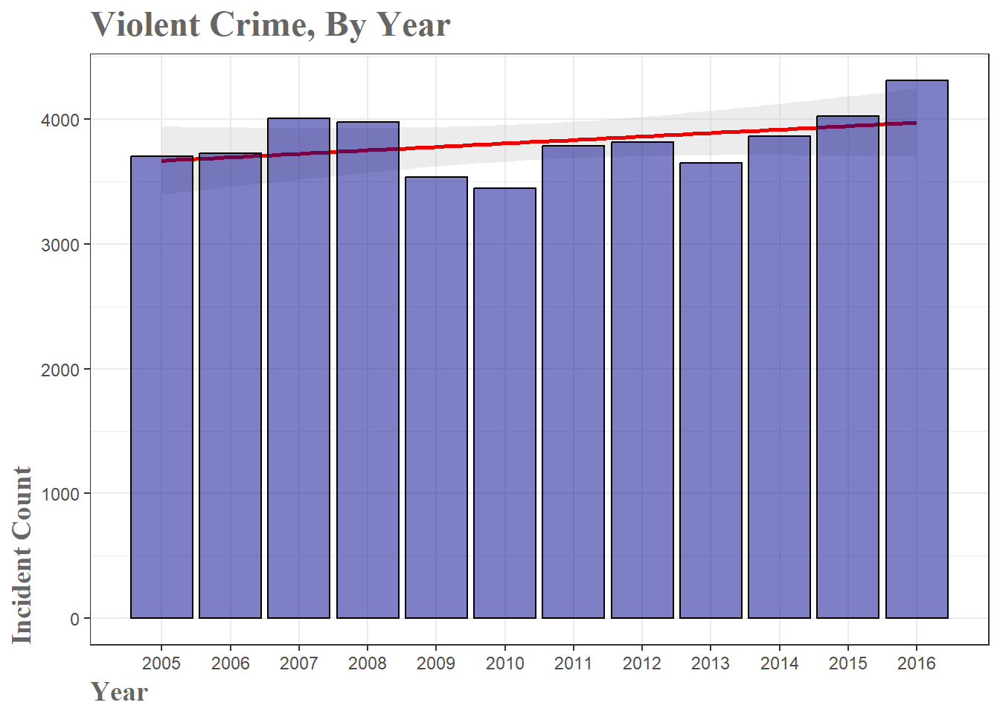
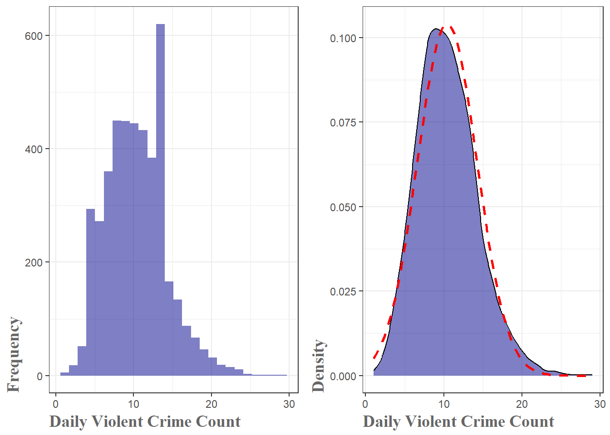
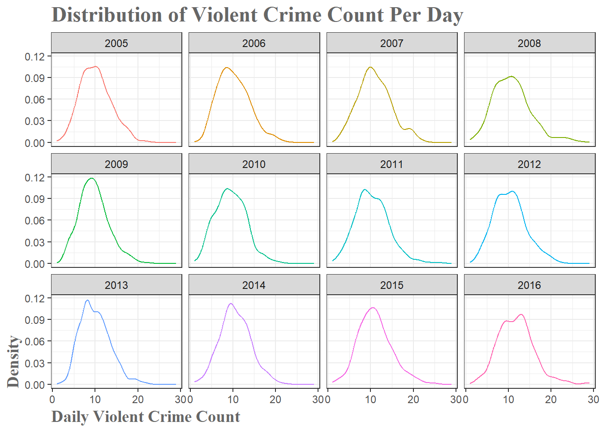
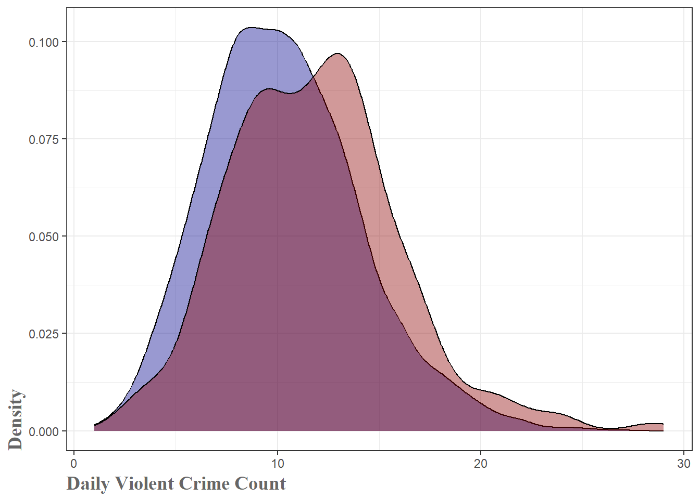
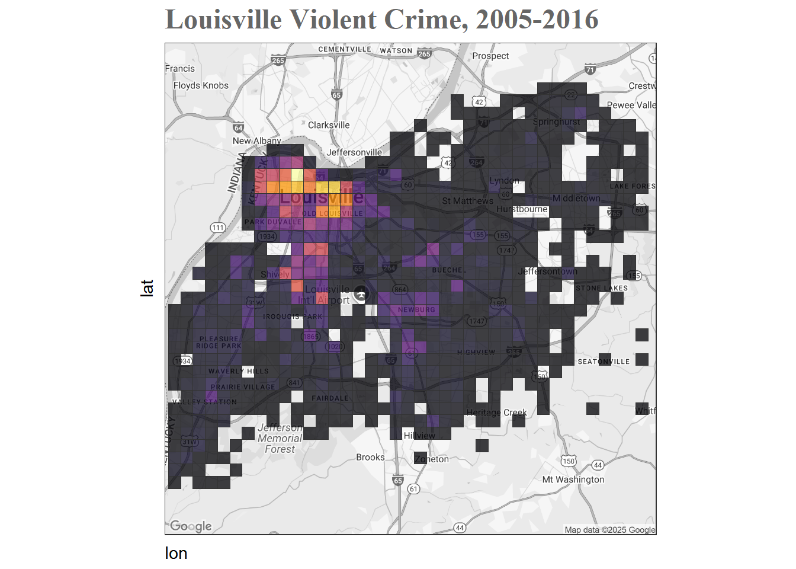
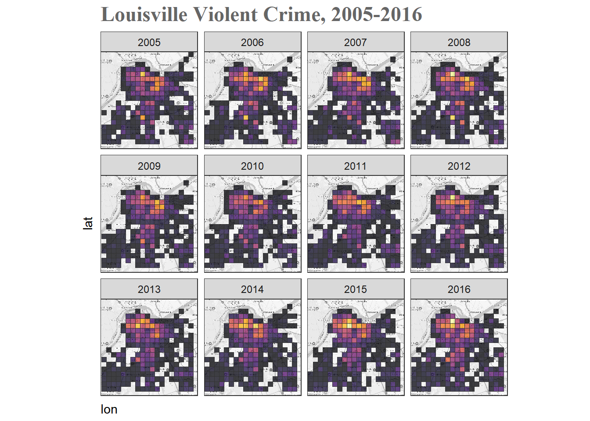
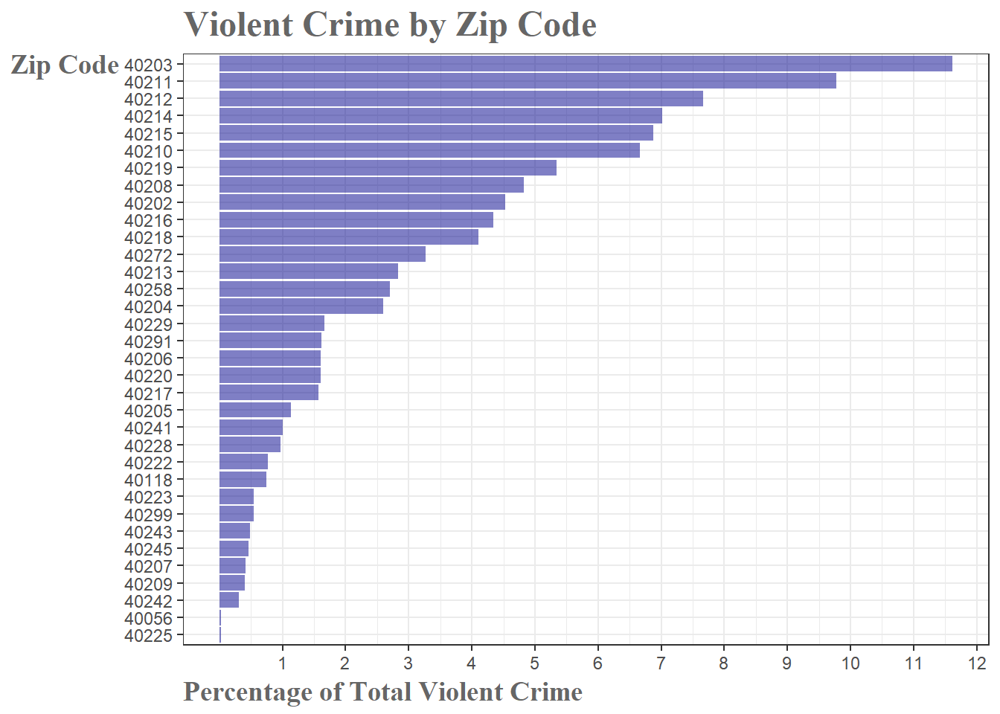
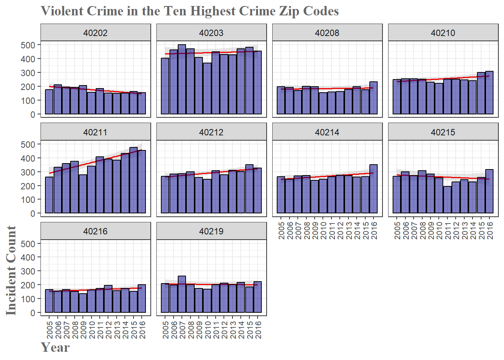
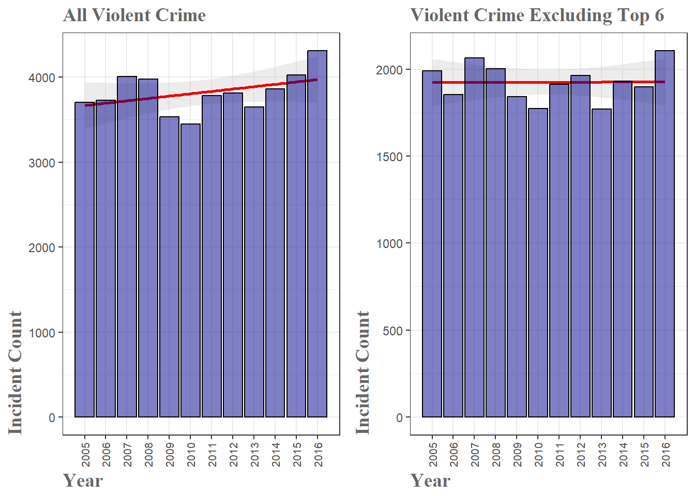

Introduction
Over the past year Louisville’s local news seems like it has been increasingly dominated by crime news. Whether it was riots, teens running rampant or a record number of homicides, you got the impression that our little city was inching toward a future resembling a scene from Mad Max. Is it no longer safe to walk the streets? Do we need to barricade the doors and booby trap the lawn? Or is this crime increase overblown and not, in fact, the start of the apocalypse. This is the first in, hopefully, a series of posts that will dive into the data and investigate just how bad crime has gotten in our fair city.
Luckily, Louisville has a rich crime dataset that is open and ripe for analysis. Although records extend back to the 1920’s, the data is very sparse up until around 2004. For the purposes of this investigation, I will look at crime records spanning 2005-2016. Given the breadth of the available data, I will need to split the analysis into components in order to go into any detail. This first post will deal strictly with violent crime.
Overview of Violent Crime
2016 was a year with a record number of homicides in Louisville. Seeing these reports every day was the genesis of this analysis, so it is only fitting to begin by exploring the most visceral of criminal offenses–violent crime. There are four offenses the FBI considers violent crime – murder and nonnegligent manslaughter, forcible rape, robbery and aggravated assault. As can be seen in the figure below, in the aggregate, a minor increase is apparent. The red trend line fit to the data has a slope of about 27 meaning (with this enormously oversimplified model) that we are seeing an increase of about 27 violent crime reports every year. However, as you can already see from the graph, the year-to-year variation is substantial making a simple trend line like this highly suspect.
If numbers are more your thing, you can see that violent crime is up about 12.8% from the 12 year mean, and is actually at an all-time high in 2016.
| Change_from_2015 | Change_from_Max | Change_from_Mean |
|---|---|---|
| 7.1% | 0% | 12.8% |
Is the Increase in Violent Crime Significant
So it does seem like we are seeing an upward trend in violent crime. But looking at the graph, it sure doesn’t appear to be the end of the world scenario the news is predicting. Was 2016 even a significant increase from the general trend of the past decade? This is a more complicated question than it appears. Are we asking about 2016 compared to the running average from the previous 11 years(2005-2015)? Or are we asking whether 2016 counts are different from 2015(or different from 2005 for that matter)? Let’s look at both and see what they tell us.
First, let’s look at the breakdown of violent crime by day. Both the histogram and the density plot show the same information, just in different ways. What we can see on both is that right around 10 violent crimes per day is most common. What the density plot shows a little better is the slight right-skewed shape to the distribution. It is approximately normal(the dotted red line), but with that right-skew which indicates higher counts have more probability associated with them.

Violent Crime Distributions Broken Down By Year
Looking at the same data, but broken into years, we can see that, while there is variation, it is not obvious whether there has been a shift in the distribution–which would indicate a change in violent crime.

However, when we compare 2016 versus 2005-2015, a clear shift in the distribution is visible.

With all this in hand, can we give a more definitive answer as to whether violent crime has increased? We can if we ask the question ‘Is the mean count of violent crimes per day in 2016 different from the mean count of violent crimes in the period 2005-2015’? Using a t-test we get the following.
One Sample t-test
data: sums_2016$count
t = 6.7818, df = 363, p-value = 4.83e-11
alternative hypothesis: true mean is not equal to 10.30027
95 percent confidence interval:
11.34913 12.20582
sample estimates:
mean of x
11.77747 That is a lot of information, but we want to focus on two values–the p-value and the confidence interval. The test is asking if the ‘true’ mean number of violent crimes per day is 10.3, how likely is it that we see a random sample(the data from 2016) with a mean of 11.78. The p-value of 4.83e-11 is basically the probability of seeing this result. So in this case, the result is almost unheard of if it were just due to chance(i.e., there is a real difference). Looking at the confidence interval, if our 2005-2015 mean of 10.3 was contained within it would indicate that we could not be confident 2016’s results weren’t due to random fluctuation. Both of these values indicate that the mean of 2016 is different from, and in this case larger than, the 2005-2015 mean.
With all of that said, it is important to keep in mind the difference between statistical and practical significance. While there does appear to be a statistically significant change in the daily violent crime count, that does not necessarily mean there is a practically significant difference. Looking at absolute numbers, we are looking at a difference of 1.48. Is 1.48 more violent crimes per day cause for alarm? Well, that depends on a lot of factors, most of which I won’t get into here. But for illustration purposes I will point out that according to the latest census information, Louisville’s population grew 3.3% from 2010 to 2016. It seems logical that an increase in population will also result in an increase in absolute crime numbers. If you normalize for population increase, do you still see a significant change? I will leave that analysis to the reader.
Mapping Violent Crime Locations
It is also informative to see where the violent crimes are centered in Louisville. Although this greatly simplifies the issue, if crimes are highly concentrated in certain areas you may have less to worry about if you live across town than if you happen to live right in the middle of those neighborhoods. After some additional data preparation and geocoding it is simple enough to see where violent crime is taking place.

It should be immediately obvious that there is one major and one minor hotspot. Let’s zoom in to those areas and see if we can detect a change over time.

When we zoom in and break it down by year, we can see a minor, but visible, increase in the intensity of the heat map. Particularly from 2012-2016 we see a brightening of intensity in downtown Louisville. In 2016 in particular, it appears that we have expanding the downtown crime bubble ever so slightly, though this would warrent further analysis to determine anything concretely. What becomes apparent when viewing these breakdowns though is just how localized the violent crime is. When broken down by zip codes, it is shocking how skewed the numbers are. Just 6 of Louisville’s 66 zip codes account for 49.6% of all violent crime in Louisville. If we bump that up to the 12 zip codes, we cover 76.01% of violent crimes.

High Crime Zip Codes
Finally, let’s take a quick look at the worst ten zip codes in terms of violent crime and see if maybe a change within those areas is why we are seeing marginally higher violent crime numbers in the city as a whole.

Examining the plot, we have 4 of the 10 zip codes showing a slight downward trend, with the remaining 6 trending upward. Unfortunately, 40211 is in a league of its own, showing a dramatic increase in violent crime since 2005. With 5 of the 6 top zip codes showing increasing trends, I wanted to determine whether they were the reason for the increase in violent crime. Is violent crime just increasing in those areas or is the problem more widespread?
The plot below shows that by excluding the top 6 violent crime zip codes–which, remember, account for nearly 50% of all Louisville’s violent crime–we actually see a dramatically different picture.

We go from a very clear increase over the years to essentially a flat trend. If we perform the same t-test as before, we still have a significant finding, but the result is much more borderline. The 2005-2015 mean of 5.25 is quite close to falling within the 95% confidence interval in this case. So we can with reasonable confidence say that violent crime has increased marginally, but for the vast majority of Louisville’s residents, this increase may not actually be practically significant. Isolated pockets within the city are bearing the brunt of this increase, while large portions of the city are left with little to no increase at all.
One Sample t-test
data: sums_2016_no_top_6$count
t = 3.6664, df = 360, p-value = 0.000283
alternative hypothesis: true mean is not equal to 5.254036
95 percent confidence interval:
5.509984 6.102205
sample estimates:
mean of x
5.806094 Conclusion
As with most socioeconomic matters, violent crime in Louisville is difficult to interpret and tough to pin down. On the whole, we did seem to have an above average 2016 when compared to the previous 11 years. The heavily localized nature of violent crime in the city seems to suggest individual citizens outside these areas have little reason to fear for their personal safety. When these localized areas are excluded and the remainder of the city is analysed, Louisville’s violent crime has stayed relatively steady over the past 11 years. While 2016 did have a notable uptick in violent crime, more analysis would be needed to determine whether this year was an anomaly or whether this could signal the start of more significant cultural or demographic shifts within the city. Perhaps most significantly overlooked is the change in population over the period from 2005-2016
Whether this marginal trend is cause for alarm is a different matter. City officials may have great cause for concern as several regions of the city have experienced rapid increases in violent crime over the past decade. Fractions of downtown account for a vast majority of all violent crime in the city and that certainly has devastating economic and social impacts on, not only those specific regions, but Louisville as a whole. This is, obviously, a very rough sketch of the violent crime landscape, but with further analysis perhaps smarter plans for law enforcement could be developed.
It should be noted that this is my first dive into crime data. Therefore, many conventions for dealing with data of this sort have certainly been overlooked. Blame the researcher, not the data itself. Additionally, it should be noted that this report can only address crimes contained in the data set. Put bluntly, it is common knowledge that certain crimes–for instance, rape–often go unreported. Sadly, as far as I could gather, this is just something inherent to crime data sets. With that said, it is important to take all of this analysis with a grain of salt and treat it more as a guideline, rather than a ground truth.
Stay tuned for part two where I begin pilfering the dataset for insight into Louisville’s theft problem.
The full code used to generate this report can be found here.